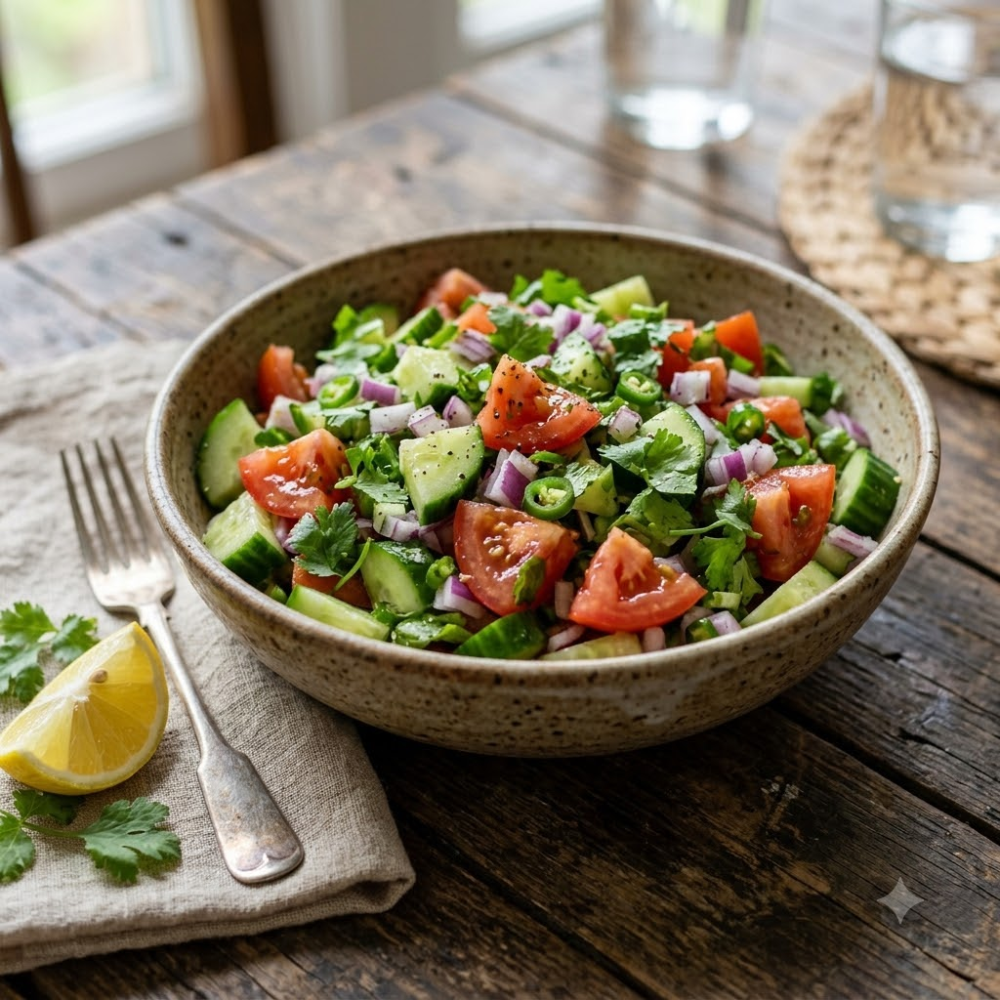

Kachumber Salad (Cucumber-Tomato Salad)

Kachumber Salad (Cucumber-Tomato Salad)
No-Cook — 8 min — Serves 4
Gluten-Free • Vegan • No-Cook • Everyday
Ingredients
- 1 cucumber, finely diced
- 2 tomatoes, finely diced
- 1 small onion, finely diced
- 1 tbsp lemon juice
- 1/4 tsp roasted cumin powder (bhuna jeera powder)
- Salt to taste
- Chopped coriander (dhania)
Method
1Combine the cucumber, tomatoes and onion in a bowl.
2Toss with lemon juice, roasted cumin powder and salt.
3Garnish with coriander and serve fresh alongside any curry, biryani or grilled dish.